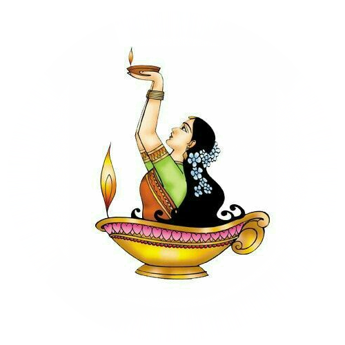

Les Danses Classiques Indiennes et leurs Régions
Introduction
L'Inde est un pays d'une richesse culturelle incomparable, avec une histoire marquée par des traditions ancestrales et un attachement profond à l'art sous toutes ses formes. Parmi ces formes artistiques, les danses classiques occupent une place particulière, servant non seulement de moyen d'expression mais aussi de narration d'histoires mythologiques et spirituelles.
Origine et Importance
Chaque région de l'Inde a développé son propre style de danse, influencé par l'histoire locale, les croyances religieuses et les traditions culturelles. Ces danses ne sont pas de simples performances artistiques, elles sont le reflet d'une philosophie de vie, d'une discipline rigoureuse et d'une transmission orale qui perdure depuis des siècles. Leur rôle dépasse largement le cadre du spectacle : elles servent à célébrer des rites religieux, à honorer les divinités et à transmettre des valeurs spirituelles et morales.
L'origine de ces danses remonte aux textes anciens comme le Natya Shastra, un traité sur l'art dramatique attribué au sage Bharata, qui codifie les différents mouvements, expressions et règles fondamentales du théâtre et de la danse en Inde. Selon ce texte sacré, la danse est un moyen d'expression divine permettant de représenter le monde et ses émotions à travers le mouvement du corps, les gestes et l'expression du visage.
Les Éléments Clés des Danses Classiques
Les danses classiques indiennes suivent des principes stricts, mêlant expression faciale (Abhinaya), gestes des mains (Mudras), postures corporelles (Bhangas) et rythme (Tala). Elles reposent sur la théorie du Navarasa, qui définit les neuf émotions principales représentées dans la danse :- Shringara (amour, beauté)
- Hasya (joie, humour)
- Karuna (compassion, tristesse)
- Raudra (colère, férocité)
- Veera (héroïsme, courage)
- Bhayanaka (peur, terreur)
- Bibhatsa (dégoût, aversion)
- Adbhuta (émerveillement, surprise)
- Shanta (paix, sérénité)
Les Principales Danses Classiques Indiennes par Région
L'Inde possède plusieurs formes de danses classiques, chacune ayant ses propres caractéristiques et particularités. Voici les principales selon leur région d'origine :- Tamil Nadu : Bharatanatyam – Une danse sacrée exécutée dans les temples, caractérisée par ses postures sculpturales et ses expressions intenses.
- Uttar Pradesh : Kathak – Une danse élégante et narrative, influencée par les traditions hindoues et mogholes.
- Kerala : Kathakali et Mohiniyattam – Deux styles distincts, l'un étant un théâtre dansé spectaculaire et l'autre une danse gracieuse et fluide.
- Andhra Pradesh : Kuchipudi – Une fusion entre théâtre et danse, connue pour ses mouvements dynamiques et son expressivité.
- Odisha : Odissi – Un style fluide et gracieux, inspiré des sculptures des temples anciens.
L'Influence des Danses Classiques Indiennes
Ces danses ont influencé de nombreuses autres formes artistiques en Inde et à l’étranger. Elles sont enseignées dans des écoles spécialisées et transmises de maître à disciple selon le système du Guru-Shishya Parampara (relation maître-élève). Aujourd’hui, elles continuent d’être pratiquées lors des festivals, des cérémonies religieuses et des spectacles à travers le monde, témoignant de leur intemporalité et de leur importance culturelle.
Chaque page de ce site vous invite à explorer ces danses en profondeur, en mettant en lumière leur histoire, leurs caractéristiques distinctives et leur impact culturel au fil des siècles. Plongez dans cet univers fascinant et découvrez l’héritage vivant des danses classiques indiennes !